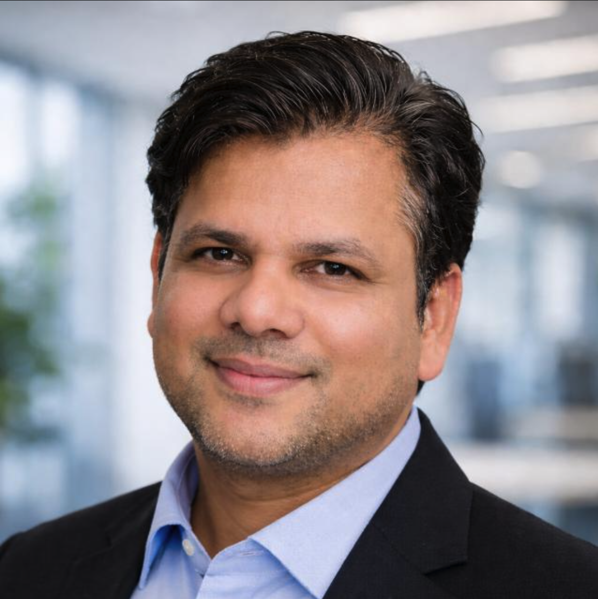

01 / FOCUS
Featured
Emotional AI
Systems that read tone, context, and the unspoken weight behind a sentence — AI that feels less like a query engine, more like a thoughtful collaborator.

Technology Leader · AI Explorer
Technology has been more than a career for me — it has been over two decades of solving complex problems, building scalable platforms, leading high-performing engineering teams, and continuously learning through innovation.
As a technology leader with 20+ years of experience, I've been fortunate to architect and scale large-scale e-commerce, loyalty, and enterprise platforms — transforming ideas into reliable, high-impact products. I enjoy simplifying complexity, driving engineering excellence, and building technology that delivers measurable business value.
While my foundation lies in scalable software engineering, my curiosity has led me toward the next frontier of AI. Today, I am deeply exploring Emotional AI, Metacognition, AI Companions, Digital Clones, Voice Cloning, and Human-Centric Intelligence — building systems that go beyond data processing to understand human behavior, emotions, memories, and decision-making.
I am particularly fascinated by the convergence of voice intelligence, behavioral modeling, memory architectures, and emotionally adaptive AI — with the vision of creating digital systems that feel natural, empathetic, and deeply personal.
I believe the future of AI is not defined by larger models alone — it will be shaped by systems that understand people, adapt with experience, reason about their own decisions, and augment human potential.
Systems that read tone, context, and the unspoken weight behind a sentence — AI that feels less like a query engine, more like a thoughtful collaborator.
AI that reasons about its own reasoning. Knows what it doesn't know, when to ask, when to slow down.
Voice cloning, behavioral patterns, memory snapshots — a faithful digital counterpart that can speak, decide, learn in someone's stead.
Modeling how humans choose, weigh trade-offs, form habits — so AI assists decisions instead of replacing them.
Preserving voices, decisions, and minds across time. Letting our grandchildren talk to us, long after.
The future of AI is not defined by larger models alone — it will be shaped by systems that understand people, adapt with experience, and reason about their own decisions.
Director of Engineering
Gurugram, Haryana, India
Sr. Engineering Manager
Gurgaon, India
Co-Founder & CTO
Co-Founder
Senior SWE → Group Lead → Tech Lead → Tech Manager → Engineering Manager
New Delhi Area, India
Software Engineer
Mumbai, Maharashtra, India
Game Developer
New Delhi
Birla Institute of Technology and Science, Pilani
Recent · Post-GraduateIIIT Hyderabad — Machine Learning & Deep Learning
CertificationDr. A.P.J. Abdul Kalam Technical University
FoundationCombining cloned voice, behavioral patterns, and a small memory architecture. Currently teaching it when not to answer.
Can a 7B-parameter model meaningfully reason about its own confidence? Early experiments suggest yes — with the right scaffolding.
The most valuable things in any week are still the ones nothing has learned to do — and probably shouldn't.
Open to advisory work, collaborations, speaking, and conversations on Emotional AI, Metacognition, Voice intelligence, and Human-Centric Intelligence.